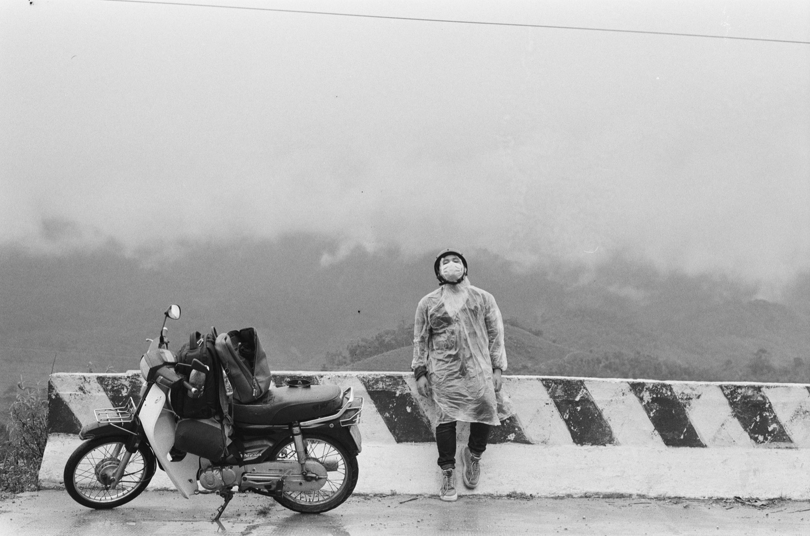

비용
50cc 오토바이 연비: 추측 없이 계산하는 법

모든 50cc 오토바이에 맞는 하나의 숫자는 없습니다. 실제 연비는 엔진 구조, 차량 상태, 무게, 교통 체증, 오르막, 주행 습관에 따라 달라집니다. 그래서 남의 광고 수치에 기대기보다 내 오토바이를 한 번 측정하는 것이 더 유용합니다.
연비를 제대로 재는 법
- 탱크를 일정하고 분명한 높이까지 채운다.
- 트립 미터를 초기화하거나 주행거리를 적는다.
- 짧은 한 바퀴가 아니라 평소 시내 주행을 한다.
- 다시 같은 높이까지 채우고 리터 수를 적는다.
- 리터를 킬로미터로 나누고 100을 곱한다.
예: 120km 후 2.4리터가 들어갔다면 2.4 ÷ 120 × 100 = 100km당 2리터입니다. 정확하게 하려면 몇 번 반복하세요.

연비를 나쁘게 하는 것
- 급출발과 계속 스로틀을 끝까지 감는 것;
- 낮은 타이어 공기압;
- 더러운 에어 필터;
- 마모된 구동계나 잘못 조정된 카뷰레터;
- 2인 탑승, 무거운 짐, 오르막;
- 정차가 잦은 짧은 주행.
연료계가 틀리는 이유
오래된 오토바이의 연료계는 항상 일정하게 줄지 않습니다: 처음 절반은 천천히, 나머지는 빨리 줄 수 있습니다. 바늘만 보고 주행 가능 거리를 계산하지 마세요. 평소 주유 간 주행거리를 기억하고 여유를 두세요.
연비가 나쁠 때 정비소에 가야 하는 경우
평소 연비가 갑자기 나빠졌거나, 휘발유 냄새, 누유, 검은 연기가 있거나, 시동이 잘 안 걸리면 진단을 미루지 마세요. 연료 누유는 절약이 아니라 안전의 문제입니다.
덜 쓰는 법
타이어 공기압을 유지하고, 부드럽게 가속하고, 오일과 필터를 제때 교환하고, 불필요한 짐을 싣지 마세요. 정비 팁은 오토바이 관리 글에, 주유 방법은 베트남 휘발유 글에 있습니다.
결론
가장 좋은 기준은 판매자의 약속이 아니라 같은 조건에서 직접 잰 몇 번의 측정입니다. 그러면 작은 고장이 비싼 수리가 되기 전에 연비 변화를 알아챌 수 있습니다.